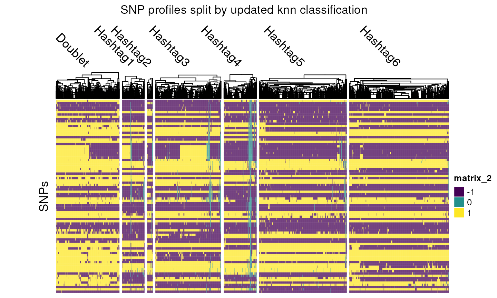

vignettes/c-demuxSNP-package-demo.Rmd
c-demuxSNP-package-demo.Rmd
library(demuxSNP)
library(ComplexHeatmap)
library(viridisLite)
library(Seurat)
library(ggpubr)
library(dittoSeq)
library(utils)
library(EnsDb.Hsapiens.v86)
library(kableExtra)To refresh, demultiplexing allows reduction of sequencing costs by sequencing cells from multiple biological sampels on the same lane, as well as allowing identifying of the increased proportion of doublets associated with greater cells loaded. Poor demultiplexing performance results in waste in valuable data, reduction in LFC used in DE or otherwise potentially confusing results.
Limitations of existing methods:
Hashing algorithms can correctly call some but not all cells correctly and is highly dependent on the hashing quality
SNPs algorithms either: Genotype based methods incur additoinal cost (Demuxlet) Genotype-free methods struggle to identify rarer samples (due to lack of genotype information)
With cell hashing, we can confidently demultiplex some but not all cells. Using these high confidence cells, we can learn the SNPs associated with each group. This SNP information can then be used to assign remaining cells (which we could not confidently call using cell hashing) to their most similar group based on their SNP profile.
Novel features:
Uses both cell hashing and SNP data. Current methods are limited to using one or the other.
Selects SNPs based on being located in a gene expressed in a large proportion of cells to reduce noise, computational cost and increase interpretability.
Impact:
Note: the approach used here differs from most SNP methods in that it is supervised. We attain knowledge of which SNPs are associated with which patients from the high confidence cells then use this to train a classifier. It is similar to demuxlet in the sense that the classifier uses group specific SNP information, however our method does not require the expense of genotyping and so may be much more widely applicable.
##biocdevel
if (!require("BiocManager", quietly = TRUE))
install.packages("BiocManager")
BiocManager::install("demuxSNP")
## or for development version:
devtools::install_github("michaelplynch/demuxSNP")For full list of arguments and explanation of each function, please refer to relevant documentation.
? maybe remove this for demo
#Data loading
data(multiplexed_scrnaseq_sce,
commonvariants_1kgenomes_subset,
vartrix_consensus_snps,
package = "demuxSNP")
small_sce<-multiplexed_scrnaseq_sce[,1:100]
ensdb <- EnsDb.Hsapiens.v86::EnsDb.Hsapiens.v86
#Preprocessing
top_genes<-common_genes(small_sce)
vcf_sub<-subset_vcf(commonvariants_1kgenomes_subset, top_genes, ensdb)
small_sce<-high_conf_calls(small_sce)
#Use subsetted vcf with VarTrix in default 'consensus' mode to generate SNPs
#matrix
small_sce<-add_snps(small_sce,vartrix_consensus_snps[,1:100])
small_sce<-reassign(small_sce,k=5)
table(small_sce$knn)
#>
#> Doublet Hashtag1 Hashtag3 Hashtag4 Hashtag5 Hashtag6
#> 30 11 16 7 4 32top_genes <- common_genes(sce): Returns the genes
which are expressed (expression > 0) in the highest proportion of
cells. These genes are used below to subset the .vcf file.
new_vcf <- subset_vcf(vcf = vcf, top_genes = top_genes, ensdb = ensdb):
Subsets a supplied .vcf to SNP locations within the genes supplied. The
ranges of the genes are extracted from the EnsDb object.
sce <- high_conf_calls(sce = sce, assay = "HTO"):
Takes a SingleCellExperiment object with HTO altExp, runs demuxmix
and returns a factor of assigned labels, a logical vector indicating
high confidence calls and a logical vector indicating which cells to
predict (all).
sce <- add_snps(sce = sce, mat = vartrix_consensus_snps, thresh = 0.8):
Adds the SNP data from VarTrix (default consensus mode) to the
SingleCellExperiment object as an altExp. Additionally, filters out SNPs
with no reads in less than ‘thresh’ proportion of cells.
sce <- reassign(sce,
k = 10,
d = 10,
train_cells = sce$train,
predict_cells = sce$predict
)Reassigns cells based on SNP profiles of high confidence cells. Singlet training data is based on high confidence singlet assignment. Doublets are simulated by systematically sampling and combining the SNP profiles of n cells pairs from each grouping combination. Cells to be used for training data are specified by “train_cells” (logical). Cells to be used for prediction are specified by “predict_cells” (logical), this may also include the training data.
The sample dataset is a subset of ccRCC scRNAseq with six patients.
knitr::include_graphics("./images/ccrcc-samples.png")Multiplexed scRNASeq sample dataset
We load three data objects: a SingleCellExperiment object containing RNA and HTO counts, a .vcf file of class CollapsedVCF containing SNPs from 1000 Genomes common variants and a matrix containing SNP information for each cell (we will show you how to generate this SNPs matrix using VarTrix outside of R). We have already removed low quality cells (library size<1,000 and percentage of genes mapping to mitochondrial genes>10%).
class(multiplexed_scrnaseq_sce)
#> [1] "SingleCellExperiment"
#> attr(,"package")
#> [1] "SingleCellExperiment"
class(commonvariants_1kgenomes_subset)
#> [1] "CollapsedVCF"
#> attr(,"package")
#> [1] "VariantAnnotation"
class(vartrix_consensus_snps)
#> [1] "matrix" "array"The HTO or LMO distribution is usually bimodal, with a signal (high counts) and background distribution (low counts) caused by non-specific binding. Ideally, these distributions would be clearly separated with no overlap, but in practice, this is not always the case. In our example data, we see that the signal and noise overlap to varying extents in each group.
We will begin by running Seurat’s HTODemux, a popular HTO demultiplexing algorithm on the data.
logcounts(multiplexed_scrnaseq_sce) <- counts(multiplexed_scrnaseq_sce)
seurat <- as.Seurat(multiplexed_scrnaseq_sce)
seurat <- HTODemux(seurat)
seurat <- MULTIseqDemux(seurat)
seurat$hash.ID <- factor(as.character(seurat$hash.ID))
seurat$MULTI_ID <- factor(as.character(seurat$MULTI_ID))
multiplexed_scrnaseq_sce$seurat <- seurat$hash.ID
multiplexed_scrnaseq_sce$multiseq<- seurat$MULTI_ID
t<-table(multiplexed_scrnaseq_sce$seurat)
u<-as.matrix(t)
kable(u) %>% kable_styling(bootstrap_options = "bordered")| Doublet | 633 |
| Hashtag1 | 121 |
| Hashtag2 | 29 |
| Hashtag3 | 264 |
| Hashtag4 | 158 |
| Hashtag5 | 177 |
| Hashtag6 | 383 |
| Negative | 235 |
Although HTO library size of the Negative group is low, the RNA library size is similar to that of other groups, indicating that they may be misclassified as ‘Negative’ due to their tagging quality rather than overall RNA quality.
library(CiteFuse)
multiplexed_scrnaseq_sce<-crossSampleDoublets(multiplexed_scrnaseq_sce)
#> number of iterations= 79
#> number of iterations= 60
#> number of iterations= 72
#> number of iterations= 80
#> number of iterations= 49
#> number of iterations= 73
kable(as.matrix(table(seurat$hash.ID,multiplexed_scrnaseq_sce$doubletClassify_between_label))) %>% kable_styling(bootstrap_options = "bordered")| 1 | 2 | 3 | 4 | 5 | 6 | doublet/multiplet | negative | |
|---|---|---|---|---|---|---|---|---|
| Doublet | 0 | 0 | 0 | 0 | 0 | 0 | 633 | 0 |
| Hashtag1 | 80 | 0 | 0 | 0 | 0 | 0 | 41 | 0 |
| Hashtag2 | 0 | 19 | 0 | 0 | 0 | 0 | 10 | 0 |
| Hashtag3 | 0 | 0 | 166 | 0 | 0 | 0 | 98 | 0 |
| Hashtag4 | 0 | 0 | 0 | 121 | 0 | 0 | 37 | 0 |
| Hashtag5 | 0 | 0 | 0 | 0 | 109 | 0 | 68 | 0 |
| Hashtag6 | 0 | 0 | 0 | 0 | 0 | 206 | 177 | 0 |
| Negative | 1 | 1 | 20 | 1 | 146 | 3 | 55 | 8 |
table(multiplexed_scrnaseq_sce$seurat,multiplexed_scrnaseq_sce$multiseq)
#>
#> Doublet Hashtag1 Hashtag2 Hashtag3 Hashtag4 Hashtag5 Hashtag6
#> Doublet 445 13 5 32 22 41 70
#> Hashtag1 4 99 0 0 0 6 0
#> Hashtag2 1 0 20 0 0 3 0
#> Hashtag3 9 0 0 204 0 2 0
#> Hashtag4 6 0 0 0 135 0 0
#> Hashtag5 0 0 0 0 0 177 0
#> Hashtag6 12 0 0 0 0 0 353
#> Negative 0 0 0 0 0 129 0
#>
#> Negative
#> Doublet 5
#> Hashtag1 12
#> Hashtag2 5
#> Hashtag3 49
#> Hashtag4 17
#> Hashtag5 0
#> Hashtag6 18
#> Negative 106
table(multiplexed_scrnaseq_sce$multiseq,multiplexed_scrnaseq_sce$doubletClassify_between_label)
#>
#> 1 2 3 4 5 6 doublet/multiplet negative
#> Doublet 0 0 0 0 0 0 477 0
#> Hashtag1 68 0 0 0 0 0 44 0
#> Hashtag2 0 15 0 0 0 0 10 0
#> Hashtag3 0 0 125 0 0 0 111 0
#> Hashtag4 0 0 0 109 0 0 48 0
#> Hashtag5 0 0 0 0 202 0 156 0
#> Hashtag6 0 0 0 0 0 193 230 0
#> Negative 13 5 61 13 53 16 43 8For the remainder of this vignette we will outline our method of checking whether or not these cells have been called correctly and how to assign them to their appropriate group!
Common variants files, for example from the 1000 Genomes Project, can contain over 7 million SNPs. To reduce computational cost and cell-type effects, we subset our SNPs list to those located within genes expressed across most cells in our data.
We first find the most commonly expressed genes in our RNA data.
top_genes <- common_genes(sce = multiplexed_scrnaseq_sce, n = 100)
top_genes[1:10]
#> [1] "TPT1" "RPL13" "RPL28" "TMSB4X" "RPS27" "EEF1A1" "RPL41" "B2M"
#> [9] "RPLP1" "RPL32"We have a sample .vcf preloaded, but you can load your .vcf file in using ‘readVcf()’ from VariantAnnotation.
We will subset our .vcf file to SNPs seen in commonly expressed genes from our dataset. Notice that the genome for the vcf and EnsDb object must be compatible!
The returned vcf can be written to file and used with VarTrix later on.
ensdb <- EnsDb.Hsapiens.v86::EnsDb.Hsapiens.v86
genome(commonvariants_1kgenomes_subset)[1] == genome(ensdb)[1]
#> 1
#> TRUE
new_vcf <- subset_vcf(commonvariants_1kgenomes_subset, top_genes = top_genes, ensdb)
commonvariants_1kgenomes_subset
#> class: CollapsedVCF
#> dim: 2609 0
#> rowRanges(vcf):
#> GRanges with 5 metadata columns: paramRangeID, REF, ALT, QUAL, FILTER
#> info(vcf):
#> DataFrame with 1 column: AF
#> info(header(vcf)):
#> Number Type Description
#> AF A Float Estimated allele frequency in the range (0,1)
#> geno(vcf):
#> List of length 0:
new_vcf
#> class: CollapsedVCF
#> dim: 2399 0
#> rowRanges(vcf):
#> GRanges with 5 metadata columns: paramRangeID, REF, ALT, QUAL, FILTER
#> info(vcf):
#> DataFrame with 1 column: AF
#> info(header(vcf)):
#> Number Type Description
#> AF A Float Estimated allele frequency in the range (0,1)
#> geno(vcf):
#> List of length 0:The subsetted .vcf can be written to disk using ‘writeVcf()’, again from VariantAnnotation package.
Next, we wish to identify cells which we can confidently call to a particular group. There are a number of ways this can be achieved, including probabilistic modelling of the HTO counts, manually setting non-conservative thresholds or using consensus calls. The user may wish to experiment with different approaches. Here we have used demuxmix, a probabilistic model which we have set with a high acceptance threshold to identify high confidence cell calls to use as training data (cells which we can confidently call as a particular singlet group).
multiplexed_scrnaseq_sce <- high_conf_calls(multiplexed_scrnaseq_sce)
table(multiplexed_scrnaseq_sce$train)
#>
#> FALSE TRUE
#> 955 1045
table(multiplexed_scrnaseq_sce$predict)
#>
#> TRUE
#> 2000
table(multiplexed_scrnaseq_sce$labels)
#>
#> Hashtag1 Hashtag2 Hashtag3 Hashtag4 Hashtag5 Hashtag6 multiplet negative
#> 62 15 226 102 348 292 335 12
#> uncertain
#> 608So, for this particular dataset, we can confidently call 1,045 cells as being from a particular singlet group. 608 cells cannot be called to a group with high confidence.
Variant calling is not done within the package. Instead, we refer the reader to VarTrix, where they can use the subsetted .vcf file along with their .bam, barcodes.tsv and reference genome to call SNPs in each cell.
A sample VarTrix command looks like the following:
./vartrix -v <path_to_input_vcf> -b <path_to_cellranger_bam> -f <path_to_fasta_file> -c <path_to_cell_barcodes_file> -o <path_for_output_matrix>Using the output matrix from Vartrix and the high confidence classifications from the HTO algorithm, we can reassign cells using k-nearest neighbours.
To keep things tidy, we will add the SNP data to our SingleCellExperiment object as an altExp. We recode the SNP matrix as follows: 0=no read, 1=SNP present, -1=SNP absent. This function also filters out SNPs which are observed at a low frequency in the data, and the frequency threshold can be set manually.
dim(vartrix_consensus_snps)
#> [1] 2542 2000
multiplexed_scrnaseq_sce <- add_snps(multiplexed_scrnaseq_sce, vartrix_consensus_snps, thresh = 0.95)
altExp(multiplexed_scrnaseq_sce, "SNP")
#> class: SingleCellExperiment
#> dim: 85 2000
#> metadata(0):
#> assays(1): counts
#> rownames(85): Snp Snp ... Snp Snp
#> rowData names(0):
#> colnames(2000): AAACCTGAGATCTGCT-1 AAACCTGAGCGTCAAG-1 ...
#> ACTTTCAGTAAGTTCC-1 ACTTTCAGTAGGCATG-1
#> colData names(0):
#> reducedDimNames(0):
#> mainExpName: NULL
#> altExpNames(0):Before we reassign any cells, we will first use the SNPs data to inspect the results from stand-alone algorithms. Splitting the SNP data by Seurat HTODemux classification, we initially see a large number of ‘negative’ cells which appear of good quality (high proportion of reads) which may be assignable to another group. This is consistent with the library size plot we visualised earlier.
hm <- Heatmap(counts(altExp(multiplexed_scrnaseq_sce, "SNP")),
column_split = multiplexed_scrnaseq_sce$seurat,
cluster_rows = FALSE,
show_column_names = FALSE,
cluster_column_slices = FALSE,
column_title_rot = -45,
row_title = "SNPs",
show_row_names = FALSE,
col = colors
)
draw(hm,
column_title = "SNP profiles split by Seurat HTODemux call",
padding = unit(c(2, 15, 2, 2), "mm")
)We will use our knn method to reassign cells based on their SNP profiles. The training data is the high confidence cells
set.seed(1)
multiplexed_scrnaseq_sce <- reassign(multiplexed_scrnaseq_sce,
k = 10,
d = 10,
train_cells = multiplexed_scrnaseq_sce$train,
predict_cells = multiplexed_scrnaseq_sce$predict
)
table(multiplexed_scrnaseq_sce$knn)
#>
#> Doublet Hashtag1 Hashtag2 Hashtag3 Hashtag4 Hashtag5 Hashtag6
#> 337 119 30 349 174 464 527
hm <- Heatmap(counts(altExp(multiplexed_scrnaseq_sce, "SNP")),
column_split = multiplexed_scrnaseq_sce$knn,
cluster_rows = FALSE,
show_column_names = FALSE,
cluster_column_slices = FALSE,
column_names_rot = 45,
column_title_rot = -45,
row_title = "SNPs",
show_row_names = FALSE,
col = colors
)
draw(hm,
column_title = "SNP profiles split by updated knn classification",
padding = unit(c(2, 15, 2, 2), "mm")
)
Focusing in on the knn Hashtag5 group, we see that a lot of the Negative cells have now been correctly reclassed to this group, as well as a small number of cells from other groups.
hm <- Heatmap(counts(altExp(multiplexed_scrnaseq_sce, "SNP"))[, multiplexed_scrnaseq_sce$knn == "Hashtag5"],
column_split = multiplexed_scrnaseq_sce$seurat[multiplexed_scrnaseq_sce$knn == "Hashtag5"],
cluster_rows = FALSE,
show_column_names = FALSE,
cluster_column_slices = FALSE,
column_names_rot = 45,
column_title_rot = -45,
row_title = "SNPs",
show_row_names = FALSE,
col = colors
)
draw(hm,
column_title = "knn Hashtag5 group split by Seurat HTODemux classification",
padding = unit(c(2, 15, 2, 2), "mm")
)Next we will run some basic performance checks. We subset our SingleCellExperiment object to only retain cells which we could confidently call as being from a singlet group, then split this into a training and test dataset.
sce_test <- multiplexed_scrnaseq_sce[, multiplexed_scrnaseq_sce$train == TRUE]
sce_test$knn <- NULL
sce_test$labels <- droplevels(sce_test$labels)
sce_test
#> class: SingleCellExperiment
#> dim: 259 1045
#> metadata(2): doubletClassify_between_threshold
#> doubletClassify_between_resultsMat
#> assays(2): counts logcounts
#> rownames(259): RPL22 CDC42 ... MT-ND5 MT-CYB
#> rowData names(0):
#> colnames(1045): AAACCTGAGCGTCAAG-1 AAACCTGAGGCGTACA-1 ...
#> ACTTTCAGTAAGAGAG-1 ACTTTCAGTAAGTTCC-1
#> colData names(14): orig.ident nCount_RNA ... predict labels
#> reducedDimNames(0):
#> mainExpName: RNA
#> altExpNames(2): HTO SNP
sce_test$train2 <- rep(FALSE, length(sce_test$train))
sce_test$train2[seq_len(500)] <- TRUE
sce_test$test <- sce_test$train2 == FALSEComparing the predicted labels in the test dataset with the hidden high confidence labels, we see excellent agreement.
sce_test <- reassign(sce_test, k = 3, train_cells = sce_test$train2, predict_cells = sce_test$test)
table(sce_test$labels[sce_test$test == TRUE], sce_test$knn[sce_test$test == TRUE])
#>
#> Doublet Hashtag1 Hashtag2 Hashtag3 Hashtag4 Hashtag5 Hashtag6
#> Hashtag1 1 35 0 0 0 0 0
#> Hashtag2 1 0 10 0 0 0 0
#> Hashtag3 0 0 0 122 0 0 0
#> Hashtag4 0 0 0 0 46 0 0
#> Hashtag5 1 0 0 0 0 193 1
#> Hashtag6 0 0 0 0 0 0 135We can also show that that the model can correct misclassified cells when predicted back on the training data. We create a new vector “labels2” which is initially identical to the labels used in training previously.
sce_test$knn <- NULL
sce_test$labels2 <- droplevels(sce_test$labels)
table(sce_test$labels, sce_test$labels2)
#>
#> Hashtag1 Hashtag2 Hashtag3 Hashtag4 Hashtag5 Hashtag6
#> Hashtag1 62 0 0 0 0 0
#> Hashtag2 0 15 0 0 0 0
#> Hashtag3 0 0 226 0 0 0
#> Hashtag4 0 0 0 102 0 0
#> Hashtag5 0 0 0 0 348 0
#> Hashtag6 0 0 0 0 0 292We then randomly reassign 25 cells from Hashtag5 to Hashtag2 in the training data. Predicting the model back on itself we see that in the new predicted labels, the 25 altered have been correctly reclassified back to Hashtag5
sce_test$labels2[which(sce_test$labels2 == "Hashtag5")[1:25]] <- "Hashtag2"
table(sce_test$labels, sce_test$labels2)
#>
#> Hashtag1 Hashtag2 Hashtag3 Hashtag4 Hashtag5 Hashtag6
#> Hashtag1 62 0 0 0 0 0
#> Hashtag2 0 15 0 0 0 0
#> Hashtag3 0 0 226 0 0 0
#> Hashtag4 0 0 0 102 0 0
#> Hashtag5 0 25 0 0 323 0
#> Hashtag6 0 0 0 0 0 292
sce_test <- reassign(sce_test,
train_cells = sce_test$train,
predict_cells = sce_test$train
)
table(sce_test$labels, sce_test$knn)
#>
#> Doublet Hashtag1 Hashtag2 Hashtag3 Hashtag4 Hashtag5 Hashtag6
#> Hashtag1 0 62 0 0 0 0 0
#> Hashtag2 0 0 15 0 0 0 0
#> Hashtag3 0 0 0 226 0 0 0
#> Hashtag4 0 0 0 0 102 0 0
#> Hashtag5 1 0 0 0 0 346 1
#> Hashtag6 0 0 0 0 0 0 292For the knn Hashtag6 group, we see mostly good agreement with the original demuxmix labels. However, it appears one cell now being called a Hashtag6 was originally called Hashtag5. Again, we can investigate this by visualising the corresponding SNP profile. In doing so, we can see that this most likely is a true Hashtag6.
hm <- Heatmap(counts(altExp(sce_test, "SNP"))[, sce_test$knn == "Hashtag6"],
column_split = sce_test$labels[sce_test$knn == "Hashtag6"],
cluster_rows = FALSE,
show_column_names = FALSE,
cluster_column_slices = FALSE,
column_names_rot = 45,
column_title_rot = -45,
row_title = "SNPs",
show_row_names = FALSE,
col = colors
)
draw(hm,
column_title = "knn Hashtag6 group split by demuxmix classification",
padding = unit(c(2, 15, 2, 2), "mm")
)
sessionInfo()
#> R version 4.3.1 (2023-06-16)
#> Platform: x86_64-pc-linux-gnu (64-bit)
#> Running under: Ubuntu 22.04.2 LTS
#>
#> Matrix products: default
#> BLAS: /usr/lib/x86_64-linux-gnu/openblas-pthread/libblas.so.3
#> LAPACK: /usr/lib/x86_64-linux-gnu/openblas-pthread/libopenblasp-r0.3.20.so; LAPACK version 3.10.0
#>
#> locale:
#> [1] LC_CTYPE=en_US.UTF-8 LC_NUMERIC=C
#> [3] LC_TIME=en_US.UTF-8 LC_COLLATE=en_US.UTF-8
#> [5] LC_MONETARY=en_US.UTF-8 LC_MESSAGES=en_US.UTF-8
#> [7] LC_PAPER=en_US.UTF-8 LC_NAME=C
#> [9] LC_ADDRESS=C LC_TELEPHONE=C
#> [11] LC_MEASUREMENT=en_US.UTF-8 LC_IDENTIFICATION=C
#>
#> time zone: UTC
#> tzcode source: system (glibc)
#>
#> attached base packages:
#> [1] grid stats4 stats graphics grDevices utils datasets
#> [8] methods base
#>
#> other attached packages:
#> [1] CiteFuse_1.12.0 kableExtra_1.3.4
#> [3] EnsDb.Hsapiens.v86_2.99.0 dittoSeq_1.12.0
#> [5] ggpubr_0.6.0 ggplot2_3.4.2
#> [7] SeuratObject_4.1.3 Seurat_4.3.0.1
#> [9] viridisLite_0.4.2 ComplexHeatmap_2.16.0
#> [11] demuxSNP_0.99.10 ensembldb_2.24.0
#> [13] AnnotationFilter_1.24.0 GenomicFeatures_1.52.1
#> [15] AnnotationDbi_1.62.2 VariantAnnotation_1.46.0
#> [17] Rsamtools_2.16.0 Biostrings_2.68.1
#> [19] XVector_0.40.0 SingleCellExperiment_1.22.0
#> [21] SummarizedExperiment_1.30.2 Biobase_2.60.0
#> [23] GenomicRanges_1.52.0 GenomeInfoDb_1.36.1
#> [25] IRanges_2.34.1 S4Vectors_0.38.1
#> [27] BiocGenerics_0.46.0 MatrixGenerics_1.12.2
#> [29] matrixStats_1.0.0 BiocStyle_2.28.0
#>
#> loaded via a namespace (and not attached):
#> [1] progress_1.2.2 goftest_1.2-3
#> [3] vctrs_0.6.3 spatstat.random_3.1-5
#> [5] digest_0.6.33 png_0.1-8
#> [7] shape_1.4.6 ggrepel_0.9.3
#> [9] deldir_1.0-9 parallelly_1.36.0
#> [11] combinat_0.0-8 magick_2.7.4
#> [13] MASS_7.3-60 pkgdown_2.0.7
#> [15] reshape2_1.4.4 httpuv_1.6.11
#> [17] foreach_1.5.2 withr_2.5.0
#> [19] xfun_0.39 ellipsis_0.3.2
#> [21] survival_3.5-5 memoise_2.0.1
#> [23] ggsci_3.0.0 mixtools_2.0.0
#> [25] systemfonts_1.0.4 ragg_1.2.5
#> [27] zoo_1.8-12 GlobalOptions_0.1.2
#> [29] pbapply_1.7-2 DEoptimR_1.1-0
#> [31] prettyunits_1.1.1 KEGGREST_1.40.0
#> [33] promises_1.2.0.1 httr_1.4.6
#> [35] rstatix_0.7.2 restfulr_0.0.15
#> [37] globals_0.16.2 fitdistrplus_1.1-11
#> [39] rhdf5filters_1.12.1 demuxmix_1.2.0
#> [41] rhdf5_2.44.0 rstudioapi_0.15.0
#> [43] miniUI_0.1.1.1 generics_0.1.3
#> [45] curl_5.0.1 zlibbioc_1.46.0
#> [47] ScaledMatrix_1.8.1 ggraph_2.1.0
#> [49] polyclip_1.10-4 randomForest_4.7-1.1
#> [51] GenomeInfoDbData_1.2.10 xtable_1.8-4
#> [53] stringr_1.5.0 desc_1.4.2
#> [55] doParallel_1.0.17 evaluate_0.21
#> [57] S4Arrays_1.0.4 BiocFileCache_2.8.0
#> [59] hms_1.1.3 bookdown_0.34
#> [61] irlba_2.3.5.1 colorspace_2.1-0
#> [63] filelock_1.0.2 ROCR_1.0-11
#> [65] reticulate_1.30 spatstat.data_3.0-1
#> [67] magrittr_2.0.3 lmtest_0.9-40
#> [69] later_1.3.1 viridis_0.6.3
#> [71] lattice_0.21-8 spatstat.geom_3.2-2
#> [73] future.apply_1.11.0 robustbase_0.99-0
#> [75] scuttle_1.10.1 scattermore_1.2
#> [77] XML_3.99-0.14 cowplot_1.1.1
#> [79] RcppAnnoy_0.0.21 class_7.3-22
#> [81] pillar_1.9.0 nlme_3.1-162
#> [83] iterators_1.0.14 compiler_4.3.1
#> [85] beachmat_2.16.0 stringi_1.7.12
#> [87] tensor_1.5 GenomicAlignments_1.36.0
#> [89] plyr_1.8.8 crayon_1.5.2
#> [91] abind_1.4-5 BiocIO_1.10.0
#> [93] locfit_1.5-9.8 sp_2.0-0
#> [95] graphlayouts_1.0.0 bit_4.0.5
#> [97] dplyr_1.1.2 codetools_0.2-19
#> [99] textshaping_0.3.6 BiocSingular_1.16.0
#> [101] bslib_0.5.0 GetoptLong_1.0.5
#> [103] plotly_4.10.2 mime_0.12
#> [105] splines_4.3.1 circlize_0.4.15
#> [107] Rcpp_1.0.11 dbplyr_2.3.3
#> [109] sparseMatrixStats_1.12.2 knitr_1.43
#> [111] blob_1.2.4 utf8_1.2.3
#> [113] clue_0.3-64 fs_1.6.2
#> [115] listenv_0.9.0 DelayedMatrixStats_1.22.1
#> [117] ggsignif_0.6.4 tibble_3.2.1
#> [119] Matrix_1.6-0 statmod_1.5.0
#> [121] svglite_2.1.1 tweenr_2.0.2
#> [123] pkgconfig_2.0.3 pheatmap_1.0.12
#> [125] tools_4.3.1 cachem_1.0.8
#> [127] RSQLite_2.3.1 rvest_1.0.3
#> [129] DBI_1.1.3 fastmap_1.1.1
#> [131] rmarkdown_2.23 scales_1.2.1
#> [133] ica_1.0-3 broom_1.0.5
#> [135] sass_0.4.7 patchwork_1.1.2
#> [137] BiocManager_1.30.21 carData_3.0-5
#> [139] RANN_2.6.1 farver_2.1.1
#> [141] tidygraph_1.2.3 yaml_2.3.7
#> [143] bayesm_3.1-5 rtracklayer_1.60.0
#> [145] cli_3.6.1 purrr_1.0.1
#> [147] webshot_0.5.5 leiden_0.4.3
#> [149] lifecycle_1.0.3 dbscan_1.1-11
#> [151] uwot_0.1.16 bluster_1.10.0
#> [153] kernlab_0.9-32 backports_1.4.1
#> [155] BiocParallel_1.34.2 gtable_0.3.3
#> [157] rjson_0.2.21 ggridges_0.5.4
#> [159] progressr_0.13.0 parallel_4.3.1
#> [161] limma_3.56.2 jsonlite_1.8.7
#> [163] edgeR_3.42.4 bitops_1.0-7
#> [165] bit64_4.0.5 Rtsne_0.16
#> [167] spatstat.utils_3.0-3 BiocNeighbors_1.18.0
#> [169] metapod_1.8.0 jquerylib_0.1.4
#> [171] highr_0.10 dqrng_0.3.0
#> [173] segmented_1.6-4 lazyeval_0.2.2
#> [175] shiny_1.7.4.1 htmltools_0.5.5
#> [177] sctransform_0.3.5 rappdirs_0.3.3
#> [179] glue_1.6.2 RCurl_1.98-1.12
#> [181] rprojroot_2.0.3 scran_1.28.1
#> [183] BSgenome_1.68.0 gridExtra_2.3
#> [185] igraph_1.5.0 R6_2.5.1
#> [187] tidyr_1.3.0 labeling_0.4.2
#> [189] cluster_2.1.4 Rhdf5lib_1.22.0
#> [191] compositions_2.0-6 DelayedArray_0.26.6
#> [193] tidyselect_1.2.0 ProtGenerics_1.32.0
#> [195] tensorA_0.36.2 ggforce_0.4.1
#> [197] xml2_1.3.5 car_3.1-2
#> [199] future_1.33.0 rsvd_1.0.5
#> [201] munsell_0.5.0 KernSmooth_2.23-21
#> [203] data.table_1.14.8 htmlwidgets_1.6.2
#> [205] RColorBrewer_1.1-3 biomaRt_2.56.1
#> [207] rlang_1.1.1 spatstat.sparse_3.0-2
#> [209] spatstat.explore_3.2-1 Cairo_1.6-0
#> [211] fansi_1.0.4